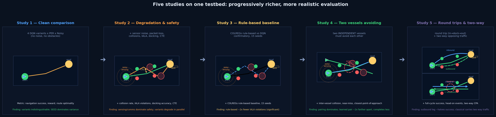
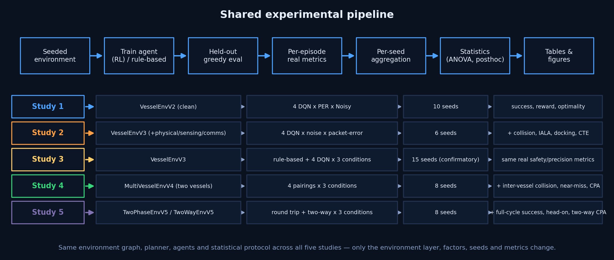

Study 4 — Two Independent Autonomous Vessels That Must Avoid Each Other
Do learned policies avoid a moving partner as well as a classical controller? · 4 pairings × 3 conditions · 8 seeds · 2,880 encounters (5,760 vessel rows)
Scope: Two independent vessels (no central controller), each with its own policy and mission,
share the channel on MultiVesselEnvV4 and must avoid inter-vessel collisions — combined with
the Study-2 sensing/comms degradation grid. Real inter-vessel geometry (collision, near-miss, closest point of
approach) + each vessel's own Study-2 metrics. The deployed web app is unaffected.
Where this fits — the study progression at a glance

You are viewing Study 4 — two independent vessels: the multi-agent
extension of the single-vessel testbed. Studies 1–3 evaluated one vessel; Study 4 puts two independent
vessels on the same channel and measures whether they avoid each other, under the same degradation grid.

Shared workflow. The same run → aggregate → stats → tables → figures pipeline;
Study 4 adds the inter-vessel geometry layer.